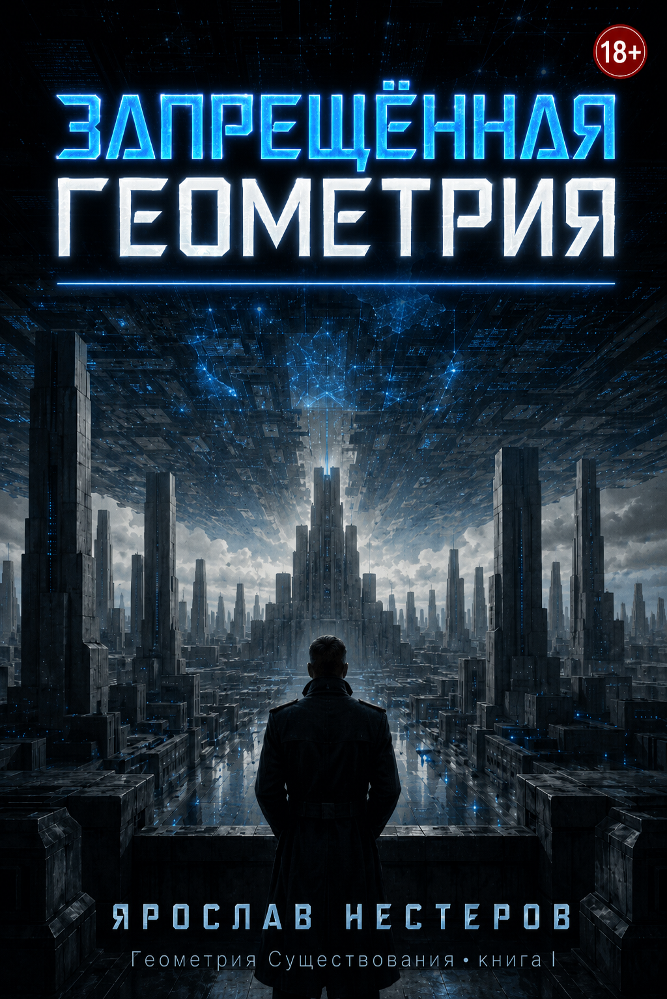
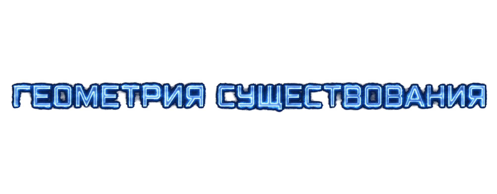
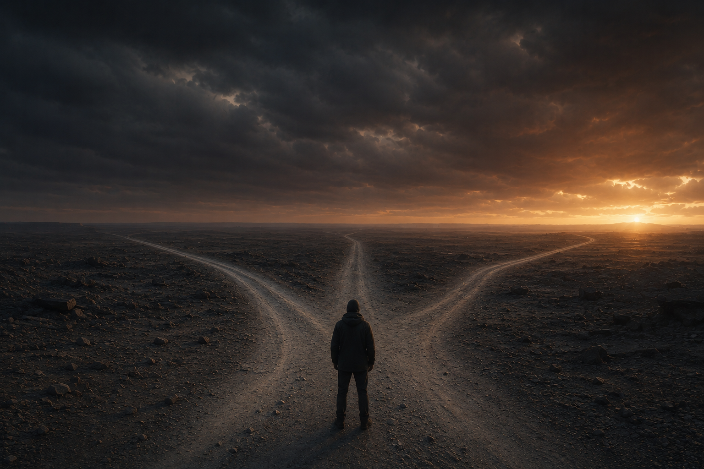
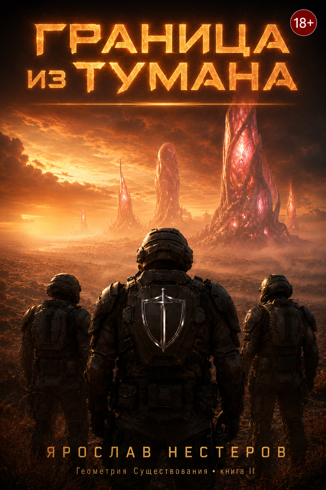
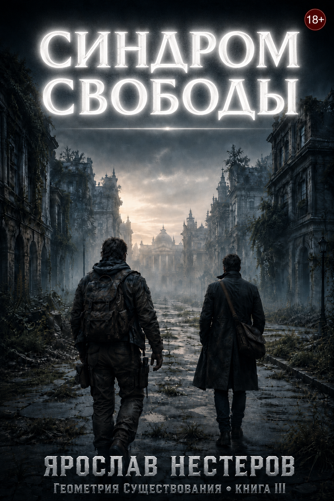
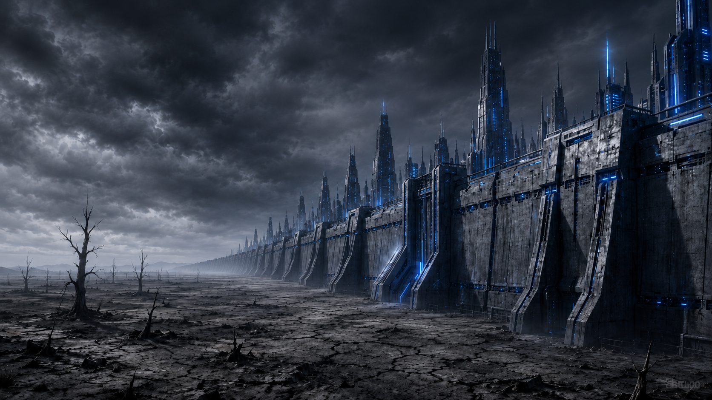
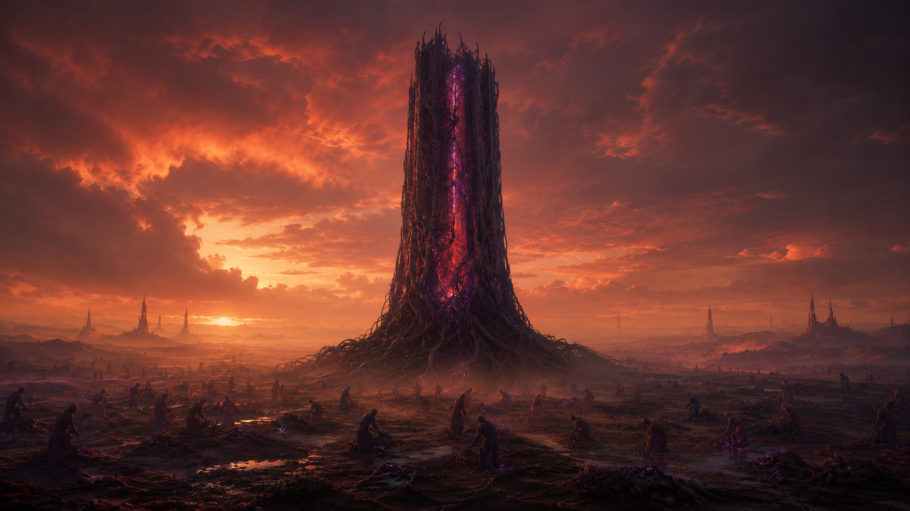
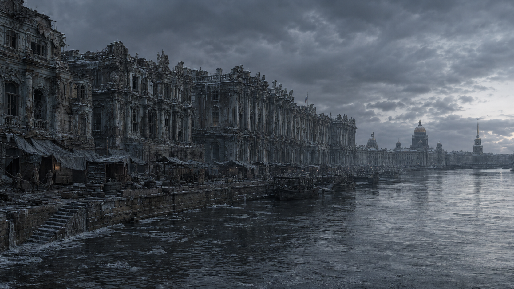
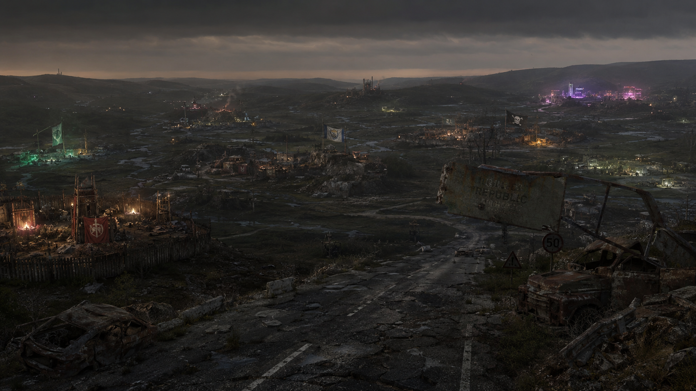
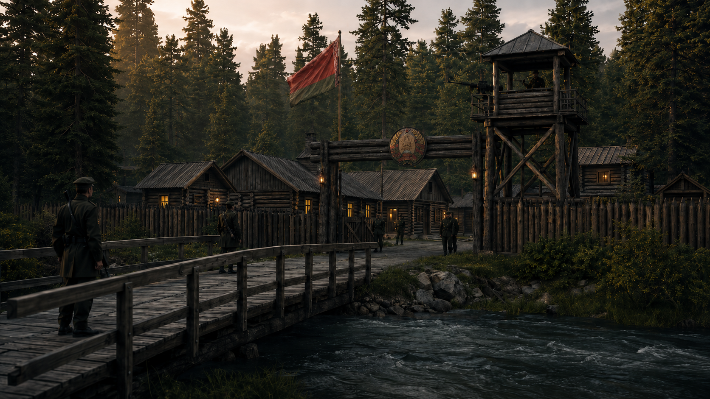

Книга I

Запрещённая геометрия
Легион · 2151
Верховный Страж Каин расследует дело генетика, уничтожившего проект «Феникс» — программу, способную переписать саму волю человека.
Читать на ЛитРес →
Мир после краха. Несколько цивилизаций. Одна задача — спасти человека, не уничтожив его.
После краха прежнего мира каждая цивилизация увидела подлинную болезнь старого человечества — и предложила своё лекарство.
Легион строит внешнюю геометрию закона. Империя — внутреннюю геометрию согласия. Конгломерат дробит мир на тысячи локальных истин. Санкт-Петербург защищает геометрию памяти.
Каждое лекарство, доведённое до предела, становится новой формой насилия. И в каждом из этих миров остаётся один вопрос: какой ценой?


Верховный Страж Каин расследует дело генетика, уничтожившего проект «Феникс» — программу, способную переписать саму волю человека.
Читать на ЛитРес →
На восточном рубеже Легион встречает Империю — цивилизацию Поля Согласия, где свобода человека физиологически невыносима.
Читать на ЛитРес →
Реставратор из Санкт-Петербурга и проводник без имени идут через руины Европы за деталями, без которых погибнет память города.
Читать на ЛитРес →«Уральский узел» — приквел цикла — в работе
Там, где рухнул общий порядок, выжившие построили разные формы существования. Ни одна не безупречна. Ни одна не лжёт о своей цене.





Какая форма общества способна защитить человека, не лишив его права оставаться несовершенным, отдельным и морально ответственным существом? — Центральный вопрос цикла